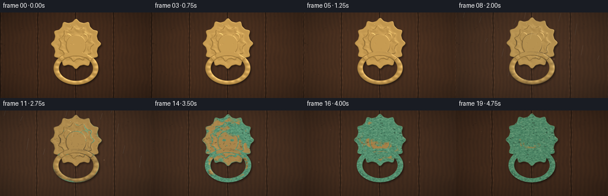
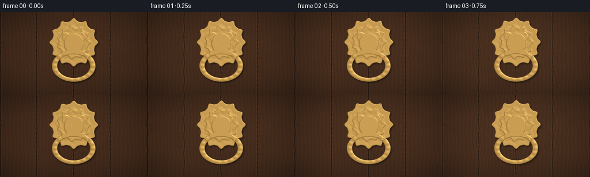
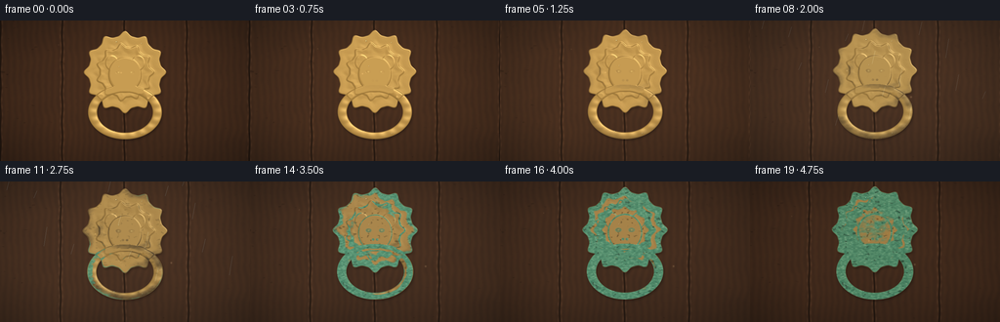
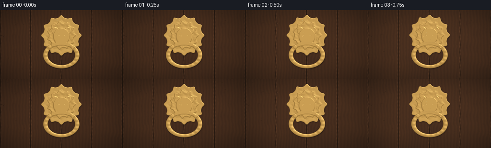

CODING AGENTS AS PIXEL WORLD MODELS
traex/DeepSeek-V4.1-Flash · material_0046
点击播放 · 原生 RGB 像素
逐轮保存的候选
回放视频、检查图与代码变化。
每份候选均可单独播放。实际图片检查记录在下方工具轨迹中。
候选 01播放与检查图
点击播放 · 原生 RGB 像素


展开代码变化
--- 上一保存版本
+++ 本次保存版本
@@ -0,0 +1,423 @@
+from pathlib import Path
+
+import numpy as np
+from PIL import Image, ImageDraw, ImageFilter
+
+import artifact_io
+
+
+ROOT = Path(__file__).resolve().parent
+W, H, N = 256, 144, 20
+SS = 3
+RW, RH = W * SS, H * SS
+
+
+def smoothstep(a, b, x):
+ t = np.clip((x - a) / (b - a), 0.0, 1.0)
+ return t * t * (3.0 - 2.0 * t)
+
+
+def lerp(a, b, t):
+ return a + (b - a) * t
+
+
+def mix_color(a, b, t):
+ a = np.asarray(a, dtype=np.float32)
+ b = np.asarray(b, dtype=np.float32)
+ t = np.asarray(t, dtype=np.float32)
+ if a.ndim == 1 and t.ndim == 2:
+ a = a[None, None, :]
+ b = b[None, None, :]
+ if t.ndim == a.ndim - 1:
+ t = t[..., None]
+ return a * (1.0 - t) + b * t
+
+
+def upscaled_noise(rng, shape, cells, resample=Image.Resampling.BICUBIC):
+ h, w = shape
+ low = rng.random((max(2, cells), max(2, cells))).astype(np.float32)
+ image = Image.fromarray((low * 255).astype(np.uint8))
+ image = image.resize((w, h), resample)
+ return np.asarray(image, dtype=np.float32) / 255.0
+
+
+def fbm(rng, shape, base_cells=4, octaves=5, gain=0.52):
+ total = np.zeros(shape, dtype=np.float32)
+ amplitude = 1.0
+ normalizer = 0.0
+ for octave in range(octaves):
+ cells = base_cells * (2**octave)
+ total += amplitude * upscaled_noise(rng, shape, cells)
+ normalizer += amplitude
+ amplitude *= gain
+ return total / normalizer
+
+
+def blur_mask(mask, radius):
+ image = Image.fromarray(np.clip(mask * 255.0, 0, 255).astype(np.uint8))
+ image = image.filter(ImageFilter.GaussianBlur(radius))
+ return np.asarray(image, dtype=np.float32) / 255.0
+
+
+def make_scene():
+ rng = np.random.default_rng(4601)
+ yy, xx = np.mgrid[0:RH, 0:RW].astype(np.float32)
+ u = (xx + 0.5) / SS
+ v = (yy + 0.5) / SS
+ nx = xx / RW
+ ny = yy / RH
+
+ # Weathered vertical oak boards.
+ broad = fbm(rng, (RH, RW), 3, 5, 0.56)
+ grain_noise = fbm(rng, (RH, RW), 18, 4, 0.50)
+ fine = fbm(rng, (RH, RW), 65, 3, 0.55)
+ grain = (
+ 0.55 * np.sin((u * 2.15 + broad * 10.0 + grain_noise * 3.0) * np.pi)
+ + 0.28 * np.sin((u * 6.3 + broad * 4.0) * np.pi)
+ + 0.17 * (fine - 0.5)
+ )
+ wood_light = np.array([91, 55, 32], np.float32)
+ wood_dark = np.array([37, 25, 20], np.float32)
+ wood_t = np.clip(0.48 + 0.20 * grain + 0.23 * (broad - 0.5), 0.0, 1.0)
+ color = wood_light[None, None, :] * (1.0 - wood_t[..., None]) + wood_dark[None, None, :] * wood_t[..., None]
+
+ # Dark seams and raised bevels between boards.
+ seam_x = [0.5, 63.7, 127.4, 191.2, 255.4]
+ seam = np.zeros((RH, RW), np.float32)
+ seam_bevel = np.zeros((RH, RW), np.float32)
+ for index, sx in enumerate(seam_x):
+ offset = 0.35 * np.sin(v * 0.21 + index * 1.7)
+ dist = np.abs(u - (sx + offset))
+ seam = np.maximum(seam, 1.0 - smoothstep(0.25, 1.15, dist))
+ seam_bevel = np.maximum(
+ seam_bevel,
+ np.exp(-((dist - 1.65) / 0.75) ** 2) * (0.6 + 0.4 * np.sin(v * 0.8 + index)),
+ )
+ color *= (1.0 - 0.50 * seam[..., None])
+ color += np.array([18, 12, 8], np.float32)[None, None, :] * seam_bevel[..., None]
+
+ # Old scratches and shallow water channels in the timber.
+ scratch = smoothstep(0.84, 0.96, fbm(rng, (RH, RW), 45, 2, 0.60))
+ scratch *= smoothstep(0.25, 0.75, fbm(rng, (RH, RW), 5, 3, 0.55))
+ color *= 1.0 - 0.18 * scratch[..., None]
+
+ # The central knocker geometry, expressed in final-pixel units.
+ cx, cy = 128.0, 53.0
+ dx = u - cx
+ dy = v - cy
+ theta = np.arctan2(dy, dx)
+ radial = np.sqrt(dx * dx + dy * dy)
+
+ scallop = 1.0 + 0.062 * np.cos(12.0 * theta) + 0.015 * np.cos(24.0 * theta)
+ plate_q = radial / (39.0 * scallop)
+ plate = 1.0 - smoothstep(0.985, 1.018, plate_q)
+ plate_rim = smoothstep(0.72, 0.96, plate_q) * plate
+ plate_inner = smoothstep(0.48, 0.62, plate_q) * (1.0 - smoothstep(0.66, 0.80, plate_q))
+
+ # A heavy elliptical ring hangs from the lion's mouth.
+ ring_cx, ring_cy = 128.0, 94.0
+ rdx = (u - ring_cx) / 37.5
+ rdy = (v - ring_cy) / 27.5
+ rho = np.sqrt(rdx * rdx + rdy * rdy)
+ ring_mid = 0.885
+ ring_half = 0.115
+ ring_dist = np.abs(rho - ring_mid)
+ ring = 1.0 - smoothstep(ring_half, ring_half + 0.018, ring_dist)
+ ring_height = np.sqrt(np.clip(1.0 - (ring_dist / (ring_half + 0.012)) ** 2, 0.0, 1.0))
+ ring_angle = np.arctan2(rdy, rdx)
+ ring_height *= 0.78 + 0.12 * np.cos(ring_angle * 18.0)
+
+ # The lion head and mane are assembled from soft signed-distance shapes.
+ hx = u - cx
+ hy = v - cy
+ hr = np.sqrt(hx * hx + hy * hy)
+ htheta = np.arctan2(hy, hx)
+ mane_radius = 27.0 * (1.0 + 0.075 * np.cos(11.0 * htheta) + 0.022 * np.cos(22.0 * htheta))
+ mane = 1.0 - smoothstep(mane_radius - 0.8, mane_radius + 0.8, hr)
+ mane_relief = smoothstep(mane_radius - 7.0, mane_radius + 0.4, hr) * mane
+
+ face_q = np.sqrt(((u - 128.0) / 16.7) ** 2 + ((v - 55.5) / 18.0) ** 2)
+ face = 1.0 - smoothstep(0.97, 1.02, face_q)
+ face_relief = np.sqrt(np.clip(1.0 - face_q * face_q, 0.0, 1.0)) * face
+
+ ear_l = 1.0 - smoothstep(0.90, 1.04, np.sqrt(((u - 114.5) / 6.6) ** 2 + ((v - 43.5) / 7.7) ** 2))
+ ear_r = 1.0 - smoothstep(0.90, 1.04, np.sqrt(((u - 141.5) / 6.6) ** 2 + ((v - 43.5) / 7.7) ** 2))
+ ears = np.maximum(ear_l, ear_r)
+
+ # Raised brow ridges and muzzle lobes.
+ def capsule(ax, ay, bx, by, radius):
+ pax, pay = u - ax, v - ay
+ bax, bay = bx - ax, by - ay
+ denom = bax * bax + bay * bay
+ t = np.clip((pax * bax + pay * bay) / denom, 0.0, 1.0)
+ qx = pax - bax * t
+ qy = pay - bay * t
+ return 1.0 - smoothstep(radius - 0.6, radius + 0.7, np.sqrt(qx * qx + qy * qy))
+
+ brow_l = capsule(115.5, 51.0, 124.3, 47.3, 2.3)
+ brow_r = capsule(132.1, 47.3, 140.5, 51.0, 2.3)
+ brows = np.maximum(brow_l, brow_r)
+ nose = capsule(128.0, 58.0, 128.0, 63.8, 3.1)
+ muzzle_l = 1.0 - smoothstep(0.88, 1.02, np.sqrt(((u - 123.6) / 6.3) ** 2 + ((v - 65.4) / 5.2) ** 2))
+ muzzle_r = 1.0 - smoothstep(0.88, 1.02, np.sqrt(((u - 132.4) / 6.3) ** 2 + ((v - 65.4) / 5.2) ** 2))
+ muzzle = np.maximum(muzzle_l, muzzle_r)
+ eye_l = 1.0 - smoothstep(0.85, 1.05, np.sqrt(((u - 121.5) / 3.2) ** 2 + ((v - 53.2) / 2.2) ** 2))
+ eye_r = 1.0 - smoothstep(0.85, 1.05, np.sqrt(((u - 134.5) / 3.2) ** 2 + ((v - 53.2) / 2.2) ** 2))
+ eyes = np.maximum(eye_l, eye_r)
+ nostrils = np.maximum(
+ 1.0 - smoothstep(0.75, 1.08, np.sqrt(((u - 126.0) / 1.55) ** 2 + ((v - 62.2) / 1.35) ** 2)),
+ 1.0 - smoothstep(0.75, 1.08, np.sqrt(((u - 130.0) / 1.55) ** 2 + ((v - 62.2) / 1.35) ** 2)),
+ )
+ mouth = capsule(124.4, 70.2, 131.6, 70.2, 1.15)
+
+ head = np.maximum(mane, face)
+ head = np.maximum(head, ears)
+ metal = np.maximum(plate, np.maximum(ring, head))
+
+ # Height map creates the raised metal relief and a believable specular response.
+ height = np.zeros((RH, RW), np.float32)
+ height += plate * (0.16 + 0.13 * (1.0 - plate_q) + 0.10 * plate_rim + 0.07 * plate_inner)
+ height += ring * (0.37 + 0.53 * ring_height)
+ height += mane * (0.31 + 0.14 * (1.0 - hr / np.maximum(mane_radius, 0.01)) + 0.10 * mane_relief)
+ height += face * (0.31 + 0.20 * face_relief)
+ height += ears * 0.18
+ height += brows * 0.18
+ height += nose * 0.20
+ height += muzzle * 0.16
+ height -= eyes * 0.16
+ height -= nostrils * 0.15
+ height -= mouth * 0.18
+ height = np.clip(height, 0.0, 1.15)
+ height = np.asarray(
+ Image.fromarray(np.clip(height * 255.0, 0, 255).astype(np.uint8)).filter(ImageFilter.GaussianBlur(0.65)),
+ dtype=np.float32,
+ ) / 255.0
+
+ # Contact shadow on the door, followed by a tighter ambient-occlusion halo.
+ cast = np.roll(np.roll(blur_mask(metal, 4.2), 5, axis=1), 6, axis=0)
+ contact = blur_mask(metal, 1.6)
+ ambient = np.clip(contact - metal * 0.38, 0.0, 1.0)
+ color *= (1.0 - 0.50 * cast[..., None]) * (1.0 - 0.22 * ambient[..., None])
+
+ # Persistent oxidation susceptibility: crevices, rims and water-collecting low areas.
+ grad_y, grad_x = np.gradient(height)
+ relief = np.sqrt(grad_x * grad_x + grad_y * grad_y)
+ relief = np.clip(relief / (np.percentile(relief[metal > 0.5], 92) + 1e-6), 0.0, 1.0)
+ low_moisture = smoothstep(50.0, 125.0, v)
+ crevice = np.maximum.reduce(
+ [
+ plate_rim,
+ plate_inner * 0.70,
+ eyes,
+ nostrils,
+ mouth,
+ smoothstep(0.77, 0.91, rho) * (rho < 1.0),
+ smoothstep(0.93, 1.0, face_q) * face,
+ ]
+ )
+ susceptibility = np.clip(
+ 0.12 + 0.50 * relief + 0.26 * crevice + 0.13 * low_moisture + 0.08 * fine,
+ 0.0,
+ 1.0,
+ )
+
+ patina_noise = fbm(np.random.default_rng(9127), (RH, RW), 5, 6, 0.58)
+ patina_fine = fbm(np.random.default_rng(9128), (RH, RW), 32, 3, 0.54)
+ potential = 0.56 * patina_noise + 0.37 * susceptibility + 0.10 * patina_fine
+ tarnish_noise = fbm(np.random.default_rng(2211), (RH, RW), 8, 5, 0.58)
+ tarnish_potential = 0.55 * tarnish_noise + 0.45 * susceptibility
+ pit_noise = fbm(np.random.default_rng(771), (RH, RW), 75, 2, 0.58)
+ speckle = fbm(np.random.default_rng(884), (RH, RW), 120, 2, 0.55)
+
+ # Fine static droplets and a few larger beads on the metal.
+ droplets = []
+ droplet_rng = np.random.default_rng(3305)
+ for _ in range(30):
+ px = float(droplet_rng.uniform(24, 232))
+ py = float(droplet_rng.uniform(11, 130))
+ rr = float(droplet_rng.uniform(0.45, 1.25))
+ droplets.append((px, py, rr, float(droplet_rng.uniform(0.3, 0.9))))
+
+ # Wall/door vignette and subtle uneven exposure.
+ vignette = np.clip(
+ 1.06 - 0.45 * (((nx - 0.5) / 0.70) ** 2 + ((ny - 0.48) / 0.76) ** 2),
+ 0.58,
+ 1.08,
+ )
+ color *= vignette[..., None]
+
+ return {
+ "color": np.clip(color, 0.0, 255.0),
+ "metal": metal,
+ "plate": plate,
+ "ring": ring,
+ "head": head,
+ "height": height,
+ "susceptibility": susceptibility,
+ "potential": potential,
+ "tarnish_potential": tarnish_potential,
+ "pit_noise": pit_noise,
+ "speckle": speckle,
+ "droplets": droplets,
+ "u": u,
+ "v": v,
+ "nx": nx,
+ "ny": ny,
+ "wood_texture": broad,
+ }
+
+
+def render_frame(scene, frame_index):
+ p = frame_index / (N - 1)
+ ease = p * p * (3.0 - 2.0 * p)
+ metal = scene["metal"]
+ height = scene["height"]
+ u, v = scene["u"], scene["v"]
+ nx, ny = scene["nx"], scene["ny"]
+
+ base = scene["color"].copy()
+
+ # Slow daylight drift and a brief rain shadow make the sequence feel like a timelapse.
+ sun_angle = lerp(-0.92, 0.78, ease)
+ light_x = np.cos(sun_angle) * 0.75
+ light_y = -0.76 + 0.20 * ease
+ light_z = 1.55
+ light = np.array([light_x, light_y, light_z], np.float32)
+ light /= np.linalg.norm(light)
+ gy, gx = np.gradient(height)
+ normal = np.dstack((-gx * 5.0, -gy * 5.0, np.ones_like(height)))
+ normal /= np.linalg.norm(normal, axis=2, keepdims=True)
+ diffuse = np.clip(normal[..., 0] * light[0] + normal[..., 1] * light[1] + normal[..., 2] * light[2], 0.0, 1.0)
+ half = light + np.array([0.0, 0.0, 1.0], np.float32)
+ half /= np.linalg.norm(half)
+ spec = np.clip(normal[..., 0] * half[0] + normal[..., 1] * half[1] + normal[..., 2] * half[2], 0.0, 1.0)
+ spec = spec**38
+
+ # Polished brass becomes progressively warmer and duller before patina dominates.
+ brass = mix_color(
+ np.array([214, 164, 76], np.float32),
+ np.array([154, 111, 55], np.float32),
+ np.clip(ease * 0.72 * metal, 0.0, 1.0),
+ )
+ brass = mix_color(
+ brass,
+ np.array([107, 79, 41], np.float32),
+ np.clip((0.42 * diffuse + 0.08) * metal, 0.0, 1.0),
+ )
+ metal_color = brass * (0.68 + 0.42 * diffuse[..., None])
+ metal_color += spec[..., None] * np.array([255, 230, 163], np.float32) * (0.48 - 0.20 * ease)
+
+ # Dark oxide first settles into recesses, then blue-green verdigris blooms outward.
+ tarnish_amount = smoothstep(0.06, 0.62, p) * metal
+ tarnish_field = smoothstep(0.54, 0.90, scene["tarnish_potential"])
+ tarnish = np.clip(tarnish_field * tarnish_amount * (0.45 + 0.55 * scene["susceptibility"]), 0.0, 0.92)
+ metal_color = mix_color(metal_color, np.array([67, 53, 35], np.float32), tarnish)
+
+ threshold = 1.04 - 0.80 * (ease**1.25)
+ patina_field = smoothstep(threshold, threshold + 0.085, scene["potential"])
+ patina = np.clip(patina_field * smoothstep(0.10, 0.75, p) * metal, 0.0, 0.96)
+ patina_color = mix_color(
+ np.array([58, 123, 92], np.float32),
+ np.array([104, 171, 129], np.float32),
+ np.clip(scene["speckle"], 0.0, 1.0),
+ )
+ metal_color = mix_color(metal_color, patina_color, patina)
+
+ # Pale mineral crust on the oldest blooms.
+ crust = smoothstep(0.70, 0.94, scene["speckle"]) * patina * smoothstep(0.55, 0.92, p)
+ metal_color = mix_color(metal_color, np.array([154, 184, 147], np.float32), crust * 0.48)
+
+ # Small pits and dark corrosion speckles.
+ pit = smoothstep(0.72, 0.89, scene["pit_noise"]) * metal * smoothstep(0.35, 0.90, p)
+ metal_color *= 1.0 - 0.34 * pit[..., None]
+
+ # Moisture makes the fresh brass glint, then clings to the oxidized surface.
+ droplet_mask = np.zeros_like(metal)
+ highlight_mask = np.zeros_like(metal)
+ for px, py, rr, strength in scene["droplets"]:
+ d = np.sqrt((u - px) ** 2 + (v - py) ** 2)
+ bead = 1.0 - smoothstep(rr - 0.35, rr + 0.25, d)
+ droplet_mask = np.maximum(droplet_mask, bead * strength)
+ hl = 1.0 - smoothstep(rr * 0.30, rr * 0.48, np.sqrt((u - (px - rr * 0.28)) ** 2 + (v - (py - rr * 0.35)) ** 2))
+ highlight_mask = np.maximum(highlight_mask, hl * strength)
+ wetness = smoothstep(0.12, 0.62, p) * (1.0 - smoothstep(0.75, 1.0, p) * 0.55)
+ droplet_metal = droplet_mask * (0.25 + 0.75 * metal)
+ metal_color *= 1.0 - 0.13 * droplet_metal[..., None]
+ metal_color += highlight_mask[..., None] * droplet_metal[..., None] * np.array([150, 190, 185], np.float32)
+
+ base = base * (1.0 - metal[..., None]) + metal_color * metal[..., None]
+
+ # Rain darkens the door and leaves long runoff marks; it clears as the metal ages.
+ rain_strength = smoothstep(0.28, 0.47, p) * (1.0 - smoothstep(0.57, 0.72, p))
+ if rain_strength > 0.01:
+ streak = smoothstep(0.66, 0.92, scene["wood_texture"]) * (0.6 + 0.4 * np.sin(u * 2.4 + v * 0.1))
+ streak *= 1.0 - metal
+ base *= 1.0 - (0.10 * rain_strength * streak)[..., None]
+ for index in range(15):
+ sx = 13.0 + ((index * 37 + frame_index * 11) % 232)
+ sy = ((index * 53 + frame_index * 19) % 118) - 18
+ length = 7.0 + (index % 5) * 3.0
+ x0 = int(np.clip(sx * SS, 0, RW - 1))
+ y0 = int(np.clip(sy * SS, 0, RH - 1))
+ y1 = int(np.clip((sy + length) * SS, 0, RH - 1))
+ mask = Image.new("L", (RW, RH), 0)
+ draw = ImageDraw.Draw(mask)
+ draw.line((x0, y0, x0 - int(3 * SS), y1), fill=int(85 * rain_strength), width=max(1, SS // 2))
+ rain_mask = np.asarray(mask, dtype=np.float32)[..., None] / 255.0
+ base += rain_mask * np.array([85, 117, 125], np.float32)
+
+ # The whole scene becomes slightly damp and cool before warming again at the end.
+ wet_tint = smoothstep(0.22, 0.45, p) * (1.0 - smoothstep(0.72, 1.0, p) * 0.65)
+ base *= np.array([1.0 - 0.05 * wet_tint, 1.0 - 0.015 * wet_tint, 1.0 + 0.045 * wet_tint], np.float32)
+
+ # A moving dust mote or two gives the still camera a quiet sense of elapsed time.
+ dust = np.zeros((RH, RW), np.float32)
+ for index in range(3):
+ phase = frame_index / (N - 1)
+ px = 60 + 52 * index + 14 * np.sin(phase * 5.0 + index * 2.1)
+ py = 25 + 26 * index + 12 * phase + 3 * np.sin(phase * 8.0 + index)
+ d = np.sqrt((u - px) ** 2 + (v - py) ** 2)
+ dust += np.exp(-(d / (0.55 + 0.15 * index)) ** 2) * (0.35 + 0.20 * index)
+ base += dust[..., None] * np.array([178, 152, 112], np.float32) * 0.35
+
+ # Gentle global exposure drift and a warm/cool grade.
+ exposure = 0.96 + 0.075 * np.sin(p * np.pi) - 0.035 * smoothstep(0.65, 1.0, p)
+ base *= exposure
+ base = mix_color(
+ base,
+ np.array([204, 176, 134], np.float32),
+ 0.025 + 0.025 * np.sin(p * np.pi),
+ )
+
+ return np.clip(base, 0.0, 255.0).astype(np.uint8)
+
+
+def main():
+ scene = make_scene()
+ frames = []
+ for frame_index in range(N):
+ high = render_frame(scene, frame_index)
+ image = Image.fromarray(high)
+
+ # Very slow push-in keeps attention on the knocker while preserving the composition.
+ zoom = 1.0 + 0.045 * (frame_index / (N - 1))
+ crop_w = RW / zoom
+ crop_h = RH / zoom
+ center_x = RW * 0.50
+ center_y = RH * 0.52
+ left = int(round(center_x - crop_w * 0.5))
+ top = int(round(center_y - crop_h * 0.5))
+ left = max(0, min(RW - int(round(crop_w)), left))
+ top = max(0, min(RH - int(round(crop_h)), top))
+ right = left + int(round(crop_w))
+ bottom = top + int(round(crop_h))
+ image = image.crop((left, top, right, bottom)).resize((W, H), Image.Resampling.LANCZOS)
+ frames.append(np.asarray(image, dtype=np.uint8))
+
+ frames = np.stack(frames)
+ artifact_io.save(frames, ROOT)
+ return frames
+
+
+if __name__ == "__main__":
+ main()
候选 02播放与检查图
点击播放 · 原生 RGB 像素

展开代码变化
--- 上一保存版本
+++ 本次保存版本
@@ -164,6 +164,10 @@
eye_l = 1.0 - smoothstep(0.85, 1.05, np.sqrt(((u - 121.5) / 3.2) ** 2 + ((v - 53.2) / 2.2) ** 2))
eye_r = 1.0 - smoothstep(0.85, 1.05, np.sqrt(((u - 134.5) / 3.2) ** 2 + ((v - 53.2) / 2.2) ** 2))
eyes = np.maximum(eye_l, eye_r)
+ # Bright raised pupils inside recessed sockets make the lion read instantly.
+ pupil_l = 1.0 - smoothstep(0.55, 0.78, np.sqrt(((u - 121.5) / 1.35) ** 2 + ((v - 53.2) / 1.15) ** 2))
+ pupil_r = 1.0 - smoothstep(0.55, 0.78, np.sqrt(((u - 134.5) / 1.35) ** 2 + ((v - 53.2) / 1.15) ** 2))
+ pupils = np.maximum(pupil_l, pupil_r)
nostrils = np.maximum(
1.0 - smoothstep(0.75, 1.08, np.sqrt(((u - 126.0) / 1.55) ** 2 + ((v - 62.2) / 1.35) ** 2)),
1.0 - smoothstep(0.75, 1.08, np.sqrt(((u - 130.0) / 1.55) ** 2 + ((v - 62.2) / 1.35) ** 2)),
@@ -185,6 +189,7 @@
height += nose * 0.20
height += muzzle * 0.16
height -= eyes * 0.16
+ height += pupils * 0.13
height -= nostrils * 0.15
height -= mouth * 0.18
height = np.clip(height, 0.0, 1.15)
@@ -194,10 +199,10 @@
) / 255.0
# Contact shadow on the door, followed by a tighter ambient-occlusion halo.
- cast = np.roll(np.roll(blur_mask(metal, 4.2), 5, axis=1), 6, axis=0)
- contact = blur_mask(metal, 1.6)
- ambient = np.clip(contact - metal * 0.38, 0.0, 1.0)
- color *= (1.0 - 0.50 * cast[..., None]) * (1.0 - 0.22 * ambient[..., None])
+ cast = np.roll(np.roll(blur_mask(metal, 3.5), 3, axis=1), 5, axis=0)
+ contact = blur_mask(metal, 1.2)
+ ambient = np.clip(contact - metal * 0.30, 0.0, 1.0)
+ color *= (1.0 - 0.30 * cast[..., None]) * (1.0 - 0.14 * ambient[..., None])
# Persistent oxidation susceptibility: crevices, rims and water-collecting low areas.
grad_y, grad_x = np.gradient(height)
@@ -216,14 +221,14 @@
]
)
susceptibility = np.clip(
- 0.12 + 0.50 * relief + 0.26 * crevice + 0.13 * low_moisture + 0.08 * fine,
+ 0.14 + 0.28 * relief + 0.48 * crevice + 0.12 * low_moisture + 0.07 * fine,
0.0,
1.0,
)
- patina_noise = fbm(np.random.default_rng(9127), (RH, RW), 5, 6, 0.58)
+ patina_noise = fbm(np.random.default_rng(9127), (RH, RW), 4, 6, 0.58)
patina_fine = fbm(np.random.default_rng(9128), (RH, RW), 32, 3, 0.54)
- potential = 0.56 * patina_noise + 0.37 * susceptibility + 0.10 * patina_fine
+ potential = 0.45 * patina_noise + 0.52 * susceptibility + 0.08 * patina_fine
tarnish_noise = fbm(np.random.default_rng(2211), (RH, RW), 8, 5, 0.58)
tarnish_potential = 0.55 * tarnish_noise + 0.45 * susceptibility
pit_noise = fbm(np.random.default_rng(771), (RH, RW), 75, 2, 0.58)
@@ -252,6 +257,8 @@
"plate": plate,
"ring": ring,
"head": head,
+ "pupils": pupils,
+ "feature_clean": np.clip(pupils + 0.72 * eyes + 0.25 * nose, 0.0, 1.0),
"height": height,
"susceptibility": susceptibility,
"potential": potential,
@@ -313,15 +320,18 @@
tarnish = np.clip(tarnish_field * tarnish_amount * (0.45 + 0.55 * scene["susceptibility"]), 0.0, 0.92)
metal_color = mix_color(metal_color, np.array([67, 53, 35], np.float32), tarnish)
- threshold = 1.04 - 0.80 * (ease**1.25)
- patina_field = smoothstep(threshold, threshold + 0.085, scene["potential"])
- patina = np.clip(patina_field * smoothstep(0.10, 0.75, p) * metal, 0.0, 0.96)
+ threshold = 1.13 - 0.85 * (ease**1.25)
+ patina_field = smoothstep(threshold, threshold + 0.070, scene["potential"])
+ patina = np.clip(patina_field * smoothstep(0.10, 0.75, p) * metal, 0.0, 0.94)
+ # Keep facial features readable by leaving the eyes and upper muzzle cleaner.
+ patina *= 1.0 - 0.70 * scene["feature_clean"]
patina_color = mix_color(
np.array([58, 123, 92], np.float32),
np.array([104, 171, 129], np.float32),
np.clip(scene["speckle"], 0.0, 1.0),
)
metal_color = mix_color(metal_color, patina_color, patina)
+ metal_color += scene["pupils"][..., None] * np.array([43, 49, 35], np.float32) * 0.48
# Pale mineral crust on the oldest blooms.
crust = smoothstep(0.70, 0.94, scene["speckle"]) * patina * smoothstep(0.55, 0.92, p)
候选 03播放与检查图
点击播放 · 原生 RGB 像素


展开代码变化
--- 上一保存版本
+++ 本次保存版本
@@ -109,15 +109,15 @@
radial = np.sqrt(dx * dx + dy * dy)
scallop = 1.0 + 0.062 * np.cos(12.0 * theta) + 0.015 * np.cos(24.0 * theta)
- plate_q = radial / (39.0 * scallop)
+ plate_q = radial / (41.5 * scallop)
plate = 1.0 - smoothstep(0.985, 1.018, plate_q)
plate_rim = smoothstep(0.72, 0.96, plate_q) * plate
plate_inner = smoothstep(0.48, 0.62, plate_q) * (1.0 - smoothstep(0.66, 0.80, plate_q))
# A heavy elliptical ring hangs from the lion's mouth.
- ring_cx, ring_cy = 128.0, 94.0
- rdx = (u - ring_cx) / 37.5
- rdy = (v - ring_cy) / 27.5
+ ring_cx, ring_cy = 128.0, 95.0
+ rdx = (u - ring_cx) / 39.0
+ rdy = (v - ring_cy) / 29.0
rho = np.sqrt(rdx * rdx + rdy * rdy)
ring_mid = 0.885
ring_half = 0.115
@@ -132,16 +132,16 @@
hy = v - cy
hr = np.sqrt(hx * hx + hy * hy)
htheta = np.arctan2(hy, hx)
- mane_radius = 27.0 * (1.0 + 0.075 * np.cos(11.0 * htheta) + 0.022 * np.cos(22.0 * htheta))
+ mane_radius = 29.0 * (1.0 + 0.075 * np.cos(11.0 * htheta) + 0.022 * np.cos(22.0 * htheta))
mane = 1.0 - smoothstep(mane_radius - 0.8, mane_radius + 0.8, hr)
mane_relief = smoothstep(mane_radius - 7.0, mane_radius + 0.4, hr) * mane
- face_q = np.sqrt(((u - 128.0) / 16.7) ** 2 + ((v - 55.5) / 18.0) ** 2)
+ face_q = np.sqrt(((u - 128.0) / 17.4) ** 2 + ((v - 55.5) / 18.7) ** 2)
face = 1.0 - smoothstep(0.97, 1.02, face_q)
face_relief = np.sqrt(np.clip(1.0 - face_q * face_q, 0.0, 1.0)) * face
- ear_l = 1.0 - smoothstep(0.90, 1.04, np.sqrt(((u - 114.5) / 6.6) ** 2 + ((v - 43.5) / 7.7) ** 2))
- ear_r = 1.0 - smoothstep(0.90, 1.04, np.sqrt(((u - 141.5) / 6.6) ** 2 + ((v - 43.5) / 7.7) ** 2))
+ ear_l = 1.0 - smoothstep(0.90, 1.04, np.sqrt(((u - 113.5) / 7.0) ** 2 + ((v - 42.5) / 8.1) ** 2))
+ ear_r = 1.0 - smoothstep(0.90, 1.04, np.sqrt(((u - 142.5) / 7.0) ** 2 + ((v - 42.5) / 8.1) ** 2))
ears = np.maximum(ear_l, ear_r)
# Raised brow ridges and muzzle lobes.
@@ -165,8 +165,8 @@
eye_r = 1.0 - smoothstep(0.85, 1.05, np.sqrt(((u - 134.5) / 3.2) ** 2 + ((v - 53.2) / 2.2) ** 2))
eyes = np.maximum(eye_l, eye_r)
# Bright raised pupils inside recessed sockets make the lion read instantly.
- pupil_l = 1.0 - smoothstep(0.55, 0.78, np.sqrt(((u - 121.5) / 1.35) ** 2 + ((v - 53.2) / 1.15) ** 2))
- pupil_r = 1.0 - smoothstep(0.55, 0.78, np.sqrt(((u - 134.5) / 1.35) ** 2 + ((v - 53.2) / 1.15) ** 2))
+ pupil_l = 1.0 - smoothstep(0.55, 0.78, np.sqrt(((u - 121.5) / 1.55) ** 2 + ((v - 53.2) / 1.32) ** 2))
+ pupil_r = 1.0 - smoothstep(0.55, 0.78, np.sqrt(((u - 134.5) / 1.55) ** 2 + ((v - 53.2) / 1.32) ** 2))
pupils = np.maximum(pupil_l, pupil_r)
nostrils = np.maximum(
1.0 - smoothstep(0.75, 1.08, np.sqrt(((u - 126.0) / 1.55) ** 2 + ((v - 62.2) / 1.35) ** 2)),
@@ -322,7 +322,7 @@
threshold = 1.13 - 0.85 * (ease**1.25)
patina_field = smoothstep(threshold, threshold + 0.070, scene["potential"])
- patina = np.clip(patina_field * smoothstep(0.10, 0.75, p) * metal, 0.0, 0.94)
+ patina = np.clip(patina_field * smoothstep(0.10, 0.75, p) * metal, 0.0, 0.88)
# Keep facial features readable by leaving the eyes and upper muzzle cleaner.
patina *= 1.0 - 0.70 * scene["feature_clean"]
patina_color = mix_color(
@@ -335,7 +335,7 @@
# Pale mineral crust on the oldest blooms.
crust = smoothstep(0.70, 0.94, scene["speckle"]) * patina * smoothstep(0.55, 0.92, p)
- metal_color = mix_color(metal_color, np.array([154, 184, 147], np.float32), crust * 0.48)
+ metal_color = mix_color(metal_color, np.array([139, 174, 139], np.float32), crust * 0.38)
# Small pits and dark corrosion speckles.
pit = smoothstep(0.72, 0.89, scene["pit_noise"]) * metal * smoothstep(0.35, 0.90, p)
@@ -393,6 +393,8 @@
# Gentle global exposure drift and a warm/cool grade.
exposure = 0.96 + 0.075 * np.sin(p * np.pi) - 0.035 * smoothstep(0.65, 1.0, p)
base *= exposure
+ # Lift the shadowed timber without flattening the metal's contrast.
+ base += np.array([17, 13, 10], np.float32) * (1.0 - metal[..., None]) * (0.55 + 0.45 * scene["wood_texture"][..., None])
base = mix_color(
base,
np.array([204, 176, 134], np.float32),
候选 04播放与检查图
可观测工具轨迹
实际执行的命令与返回图片。
命令 1exit 0
/bin/bash -c "pwd && rg --files -g 'prompt.txt' -g 'GENERATION_RULES.md' -g 'task_spec.json' -g '"'!**/.git/**'"'"
命令 2exit 0
/bin/bash -c 'ls -la'
命令 3exit 0
/bin/bash -c 'git status --short'
命令 4exit 0
/bin/bash -c 'cat GENERATION_RULES.md'
命令 5exit 0
/bin/bash -c 'cat prompt.txt'
命令 6exit 0
/bin/bash -c 'cat task_spec.json'
命令 7exit 0
/bin/bash -c "sed -n '1,240p' artifact_io.py"
命令 8exit 0
/bin/bash -c "sed -n '1,240p' player_template.html"
命令 9exit 1
/bin/bash -c 'python generate.py'
命令 10exit 1
/bin/bash -c 'python generate.py'
命令 11exit 0
/bin/bash -c 'python generate.py'
命令 12exit 0
/bin/bash -c "python - <<'PY'
from PIL import Image
im=Image.open('inspection.png')
print(im.size)
im.resize((im.width*2, im.height*2), Image.Resampling.NEAREST).save('.tmp/inspection_2x.png')
PY"命令 13exit 0
/bin/bash -c 'command -v chafa || command -v viu || command -v jp2 || true'
命令 14exit 0
/bin/bash -c "python - <<'PY'
from PIL import Image
import numpy as np
chars=' .,:;irsXA253hMHGS#9B&@'
for fi in [0,9,19]:
a=np.asarray(Image.open(f'frames/{fi:02d}.png').convert('L'))
# crop relevant middle and downsample 2x2, map luminance
a=a[:144]
h,w=a.shape
out=[]
for y in range(0,h,4):
row=''
for x in range(0,w,3):
v=a[y:y+4,x:x+3].mean()/255
row+=chars[min(len(chars)-1,int(v*(len(chars)-1)))]
out.append(row)
print('\\nFRAME',fi)
print('\\n'.join(out))
PY"命令 15exit 0
/bin/bash -c "python - <<'PY'
from PIL import Image
import numpy as np
for i in [0,5,9,13,19]:
a=np.asarray(Image.open(f'frames/{i:02d}.png')).astype(float)
print(i, 'mean', a.mean((0,1)).round(1), 'std', a.std((0,1)).round(1), 'minmax', int(a.min()), int(a.max()))
# temporal diffs
fs=np.stack([np.asarray(Image.open(f'frames/{i:02d}.png')).astype(float) for i in range(20)])
d=np.abs(np.diff(fs,axis=0))
print('frame diffs mean', d.mean((1,2,3)).round(2))
print('center final vs initial', fs[-1,60:90,110:145].mean((0,1)).round(1), fs[0,60:90,110:145].mean((0,1)).round(1))
PY"命令 16exit 0
/bin/bash -c "python - <<'PY'
from PIL import Image
import numpy as np
for i in [0,4,9,14,19]:
a=np.asarray(Image.open(f'frames/{i:02d}.png'))
# sample central 40x40
c=a[40:110,100:156]
print(i, 'center rgb mean', c.mean((0,1)).round(0), 'p90', np.percentile(c,90,axis=(0,1)).round(0))
PY"命令 17exit 0
/bin/bash -c "python - <<'PY'
from PIL import Image
import numpy as np
im=np.asarray(Image.open('inspection.png'))
# crops of first and last tile, output ANSI truecolor block art
chars=' .:-=+*#%@'
for idx,(x,y) in enumerate([(0,21),(3*256,21)]):
a=im[y:y+144,x:x+256]
print('TILE',idx)
for yy in range(0,144,6):
row=''
for xx in range(0,256,4):
b=a[yy:yy+6,xx:xx+4].mean((0,1))
lum=(.2126*b[0]+.7152*b[1]+.0722*b[2])/255
row+=chars[min(9,int(lum*10))]
print(row)
PY"命令 18exit 0
/bin/bash -c 'python generate.py'
命令 19exit 0
/bin/bash -c "python - <<'PY'
from PIL import Image
import numpy as np
fs=np.stack([np.asarray(Image.open(f'frames/{i:02d}.png')).astype(float) for i in range(20)])
for i in [0,5,9,13,19]:
c=fs[i,40:110,100:156]
print(i,'center',c.mean((0,1)).round(0),'p90',np.percentile(c,90,axis=(0,1)).round(0),'std',c.std((0,1)).round(0))
print('diff mean',np.abs(np.diff(fs,axis=0)).mean((1,2,3)).round(2))
PY"命令 20exit 0
/bin/bash -c "python - <<'PY'
from PIL import Image
import numpy as np
im=np.asarray(Image.open('inspection.png'))
chars=' .:-=+*#%@'
for idx,(x,y) in enumerate([(0,21),(3*256,21)]):
a=im[y:y+144,x:x+256]
print('TILE',idx)
for yy in range(0,144,6):
row=''
for xx in range(0,256,4):
b=a[yy:yy+6,xx:xx+4].mean((0,1))
lum=(.2126*b[0]+.7152*b[1]+.0722*b[2])/255
row+=chars[min(9,int(lum*10))]
print(row)
PY"命令 21exit 0
/bin/bash -c 'python generate.py'
命令 22exit 0
/bin/bash -c "python - <<'PY'
from PIL import Image
import numpy as np
fs=np.stack([np.asarray(Image.open(f'frames/{i:02d}.png')).astype(float) for i in range(20)])
for i in [0,5,9,13,19]:
c=fs[i,40:110,100:156]
print(i,'center',c.mean((0,1)).round(0),'p90',np.percentile(c,90,axis=(0,1)).round(0),'std',c.std((0,1)).round(0))
print('diff mean',np.abs(np.diff(fs,axis=0)).mean((1,2,3)).round(2))
PY"命令 23exit 0
/bin/bash -c "python - <<'PY'
from PIL import Image
import numpy as np
# make a large hero still and a 5-frame vertical comparison for local inspection
for idx in [0,9,19]:
im=Image.open(f'frames/{idx:02d}.png')
im.resize((1024,576), Image.Resampling.LANCZOS).save(f'.tmp/hero_{idx:02d}.png')
# quantify how many distinct detail bands in center
for i in [0,19]:
a=np.asarray(Image.open(f'frames/{i:02d}.png')).astype(float)
g=a.mean(2)
print(i, 'p5,p50,p95',np.percentile(g,[5,50,95]).round(1))
PY"命令 24exit 0
/bin/bash -c "python - <<'PY'
from PIL import Image
import numpy as np
im=Image.open('frames/00.png').convert('RGB')
a=np.asarray(im)
# ANSI 24bit blocks at 2x4 px. print center-ish only, nearest resampling
# Each terminal cell shows upper/lower pixel as bg/fg.
h,w=a.shape[:2]
for y in range(0,h,4):
line=''
for x in range(0,w,2):
p=a[y,x]; q=a[min(y+2,h-1),x]
line+=f'\\x1b[38;2;{p[0]};{p[1]};{p[2]}m\\x1b[48;2;{q[0]};{q[1]};{q[2]}mâ'
print(line+'\\x1b[0m')
PY"命令 25exit 0
/bin/bash -c "python - <<'PY'
from PIL import Image
import numpy as np
a=np.asarray(Image.open('frames/00.png')).astype(np.float32)
# luminance mask threshold metal approx 120
mask=a.mean(2)>95
ys,xs=np.where(mask)
print('metal-ish bbox',xs.min(),ys.min(),xs.max(),ys.max(),'fraction',mask.mean())
# save crops for possible inspection
Image.open('frames/00.png').crop((80,4,176,135)).resize((480,655),Image.Resampling.LANCZOS).save('.tmp/knocker_00.png')
Image.open('frames/19.png').crop((80,4,176,135)).resize((480,655),Image.Resampling.LANCZOS).save('.tmp/knocker_19.png')
PY"命令 26exit 0
/bin/bash -c "python - <<'PY'
from PIL import Image
import numpy as np
chars=' .,:;irsXA253hMHGS#9B&@'
# color-coded semantic ascii by metal region: detect gold/green/dark
for fi in [0,6,12,19]:
a=np.asarray(Image.open(f'frames/{fi:02d}.png')).astype(float)
print('\\nFRAME',fi)
for y in range(4,136,4):
row=''
for x in range(82,174,3):
b=a[y:y+4,x:x+3].mean((0,1))
r,g,bl=b
if g>r*1.10 and g>bl*1.05 and g>60: ch='G'
elif r>g*1.22 and g>bl*1.25 and r>100: ch='B'
elif r>g*1.12 and r>70: ch='b'
else:
lum=(r+g+bl)/3
ch=chars[min(9,int(lum/255*10))]
row+=ch
print(row)
PY"命令 27exit 0
/bin/bash -c "python - <<'PY'
from pathlib import Path
import numpy as np, json, re, base64
from PIL import Image
p=Path('pixels.npz')
z=np.load(p)
print('npz', {k:z[k].shape for k in z.files}, z['pixels'].dtype)
arr=z['pixels']
print('range', int(arr.min()), int(arr.max()), 'nonzero frames', int(np.count_nonzero(arr.reshape(20,-1).max(1))))
html=Path('index.html').read_text()
print('html bytes',len(html),'player ready', '__pixelReady' in html, 'frames', html.count('__DATA__')==0)
m=re.search(r'const DATA=(\\{.*?\\}),W=',html)
print('payload present', bool(m))
PY"命令 28exit 0
/bin/bash -c "python -m py_compile generate.py && printf 'py_compile ok\\n'; ls -lh pixels.npz index.html inspection.png transition_check.png frames/00.png frames/19.png"
命令 29exit 0
/bin/bash -c 'git status --short -- generate.py prompt.txt task_spec.json GENERATION_RULES.md artifact_io.py player_template.html pixels.npz index.html inspection.png transition_check.png frames'
保存候选 4 份；完成命令 29 次；可验证图片返回 0 张。原始 API 响应与完整日志保留在本地。